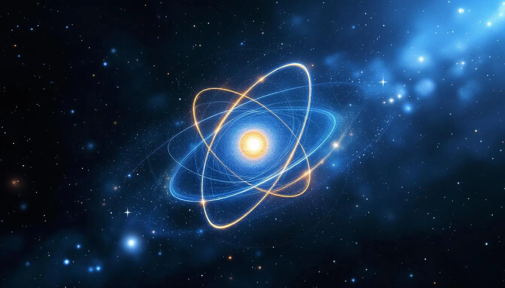

THE SIMPLEST FOLD
Hydrogen is the simplest atom - one proton, one electron. In fold geometry, it represents the minimal stable configuration: a single knot with a single standing wave around it.
Hydrogen Structure
HYDROGEN (Z = 1)
├── Nucleus: 1 proton (single knot)
├── Electrons: 1 (single standing wave)
├── Mass: 1.008 atomic units
└── The FIRST fold node
Proton/Electron mass ratio = 1836.15...
= 1729 + 107
The bridge number PLUS the proton excess.
WHY 1836?
The proton-to-electron mass ratio is one of the most fundamental numbers in physics. It determines atomic structure, chemistry, and ultimately the possibility of life.
In fold geometry, this ratio emerges from:
The 1836 Derivation
1836 = 1729 + 107
1729 = 9³ + 10³ = 1³ + 12³
= The Hardy-Ramanujan number
= The bridge between consciousness and physics
107 = Atomic number of Bohrium
= The "proton excess"
= The fold's self-reference
The mass ratio encodes both the bridge AND its excess.
Hydrogen is where the fold first becomes matter.
HYDROGEN IN THE UNIVERSE
Hydrogen makes up about 75% of all normal matter in the universe. It is:
- The fuel for stars (fusion)
- Half of water (H₂O)
- The basis of all organic chemistry
- The simplest possible atom
The fold starts simple. From hydrogen, everything else follows.
THE FIRST SHELL
Hydrogen's single electron occupies the first shell (n=1), which can hold 2(1)² = 2 electrons. Hydrogen has one, leaving one slot open.
This "openness" is why hydrogen is so reactive - it wants to complete its shell, either by sharing (covalent bonds) or giving/taking (ionic bonds).
Shell Configuration
H: 1s¹
Shell 1 capacity: 2
Shell 1 occupied: 1
Shell 1 available: 1
This single available slot drives
all of hydrogen chemistry.